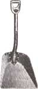

COUNTRY LORE
A dab of toothpaste will do more than prevent cavities in your mouth.
Here's a way to keep paint in good condition after you've opened the can. Before sealing the lid and storing the paint, take a good-size breath, hold it for a moment, and then breathe into the can. The carbon dioxide will displace the oxygen that causes skin to form on the paint.
-John W. Klase
Fiddletown, California
Soak and Save
Here's a way to rejuvenate the wooden handles of old tools that have become dry and brittle. Remove the cap from one end of a 2.5" PVC pipe (approximately 4.5' long) and fill it up half way with boiled linseed oil. Then insert the handle of the tool (rake, hoe, shovel, etc.) into the oil. Tie the pipe to something sturdy (I use a post in my cellar) and continue filling the pipe with the oil until all of the wood is sitting in it.
Check every few days. You'll notice that the oil level will go down as the wood soaks in more and more of it. Fill the pipe up again and leave for at least two months. I usually have a few pipes working their magic at a time. After you're finished, put the cap back on the pipe and use again next year. The results are terrific!
-Ellie Spada
Brick, New Jersey
Ashes to Plants
Years ago I spread the excess ashes from my wood stove on my garden during the winter. Unfortunately the garden was so big that I never had enough ashes to cover it entirely. So I spread the ashes on only certain areas. To my surprise, the next growing season there was a definite lack of grubs and pests attacking my root crops (potatoes, carrots, etc.) on the plants near the ashes. I marked out where the ashes were spread that year and planted all my root crops in those areas the following planting season. Voila-no bugs!
-Candy Homer
Baltimore, Maryland
Fisherman's Advice
If you've ever handled fresh fish before, you know that it can be almost impossible to remove the stinky odor from your hands. After years of fishing, I have finally come up with an easy solution: toothpaste. Squeeze a small amount of toothpaste onto your hands, moisten with water, and gently rub your hands together to create a lather. Then rinse the odor away.
-David Kelly
Spokane, Washington
Collections at the Office
Here's a cheap way to collect compost. Bring plastic containers into your office and place them near coffee-break areas. Ask your co-workers to discard their fruit peels, vegetable scraps, and coffee grinds into your containers. This "waste" makes perfect compost.
-Angel Gonzalez
Colonia, New Jersey
A Hint for Lint
Don't throw away the lint that collects in your automatic clothes dryer. It makes a useful wiping cloth for cleaning dirty shoes and also helps to wipe up oil and gas spills.
-L. A. T.
Morristown, New Jersey
Wax Away the Snow
Does snow stick to your shovel? Wax it! Warm the shovel over the kitchen range or wood stove and then coat the metal with household paraffin wax. (Wax is measured in "cakes" and can be found in the canning section of the supermarket.) We bought a one-pound box of wax, which contains five cakes, for less than a dollar. In addition to eliminating the snow from sticking, it protects the shovel from rusting.
-Keith Bellinger
Warren Center, Pennsylvania
Plastic Extensions
Recently I found that the plastic tip on the end of my caulking tube wouldn't reach the area I needed to caulk. What I needed was a flexible tip extension. So I visited the hardware store and bought a piece of plastic tubing that would slip over the caulking tube tip. I beveled the end and it was ready to go.
For a more rigid tip extension, cut an appropriate length of small copper or plastic tubing so that it will slip over the caulking tube tip. If you can't seem to make the fit snug enough, cement the extension in place.
-Hugh F. Williamson
Tucson, Arizona
Editor's Note: Country Lore is a great chance for you to share practical, down-home solutions to life's most frustrating problems. Send your helpful hints to "Lore," MOTHER EARTH News, PO. Box 129, Arden, NC 28704. Please include your phone number and a photo.
|
|
|
 |